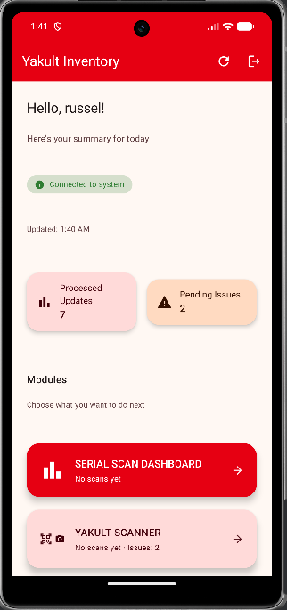
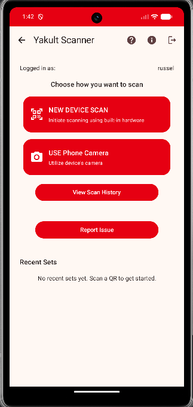

What is YakultScanner?
YakultScanner is the mobile companion app for the Yakult Inventory Management System. It lets field teams capture serials and dispatch updates directly from their devices.
- Fast barcode/QR capture with CameraX + ML Kit
- Offline-friendly flows with queued uploads
- Dispatch validation and history visibility


Requirements
- Android 7.0 (API 24) or later
- Camera permission for scanning
- Storage permission for gallery imports (legacy devices)
- Network access to Yakult API (uses cleartext traffic per manifest)